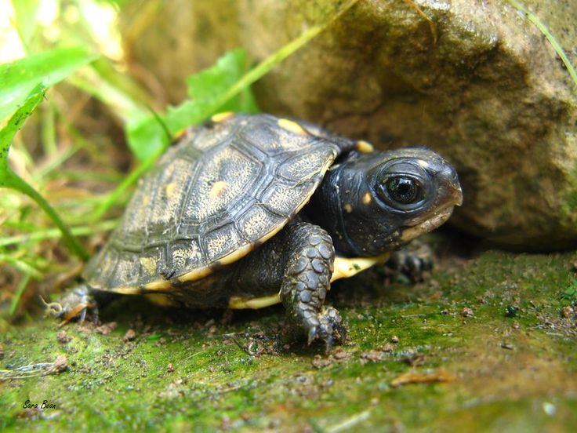

Donnatello
- Edad: 1 año
- Sexo: Macho
- Tamaño: pequeño
- Estado: Disponible
Donnatello fue rescatado de un laboatorrio donde aplicaban suero experimental para mutar siendo rescatado por la hija de uno de los coentificos y entregada a nuestra fundación.
Solicitar adopción